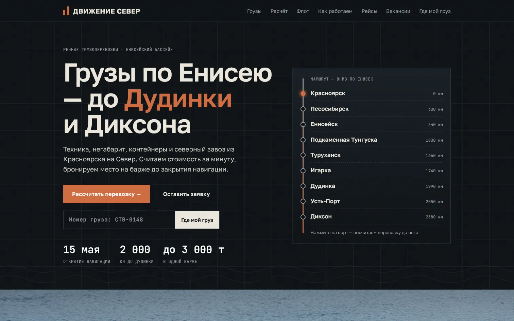
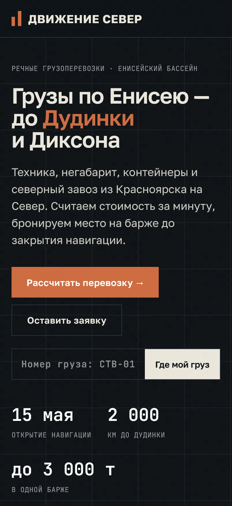
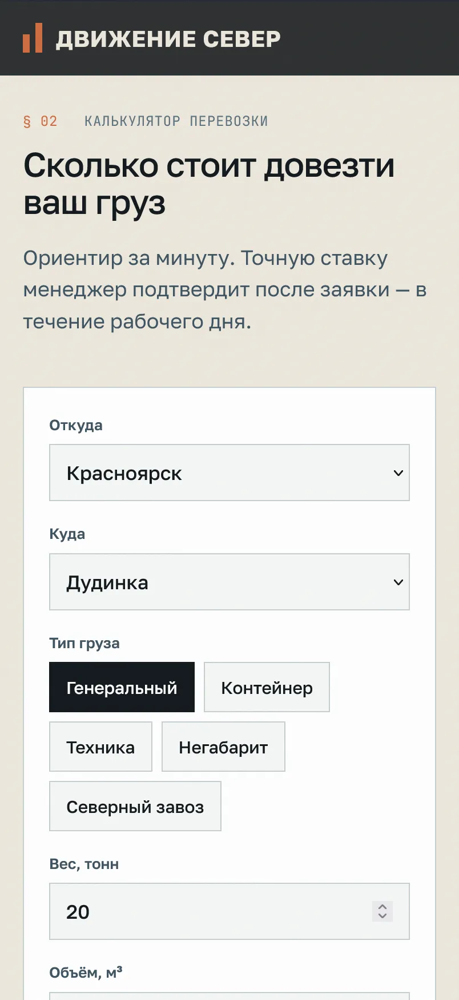
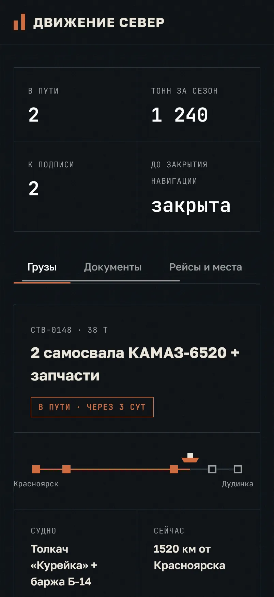

Персональное предложение · Движение Север · 5,0 в 2ГИС · 30 оценок
Движение Север: кабинет клиента вместо трек-номера
Отслеживание у вас уже есть — значит, клиенты его ценят. Следующий шаг — кабинет: все грузы клиента в одном месте, судно на ленте Енисея, фото погрузки, документы с подписью через ЭДО и повтор заказа в одно касание.




Образец — наш сайт для вымышленного перевозчика «Створ». На снимках — с вашим названием
Что мы заметили на 24dtk.ru
- Оценка 5,0 в 2ГИС — сильный аргумент, его стоит показывать на первом экране.
- На телефоне первый текст появляется примерно через 10 секунд, главная картинка — через 14; оценка скорости Google — 54 из 100.
- Ссылка на сайт в мессенджере приходит без картинки и заголовка.
По открытым данным и замеру Google Lighthouse на телефоне, 18.10.2026
Что входит
- Сайт под Яндекс и телефон: услуги, маршруты по Енисею, флот, вакансии, политика по 152-ФЗ.
- Калькулятор перевозки по вашим тарифам — с предупреждением о закрытии навигации.
- Заявки сразу менеджеру в MAX или Telegram, с расчётом внутри.
- Кабинет клиента: где судно, этапы, фото погрузки, документы через ЭДО, свободные места на рейсах.
- Приложение экипажа: приказ на рейс, вахты, сроки медкомиссии и дипломов.
- Реклама и ведение: Яндекс Директ и карты к навигации, отчёт «потрачено — заявок — цена заявки».
Стоимость
| Этап 1. Сайт, калькулятор, заявки, вакансии, карточки 2ГИС и Яндекса | 129 000 ₽ |
| Этап 2. Кабинет клиента, приложение экипажа, панель менеджера | 249 000 ₽ |
| Реклама и ведение, в месяц (бюджет рекламы — отдельно) | 34 900 ₽ |
Окупается одной перевозкой на Север. Ваши тексты, фото и адрес сайта переносим — ничего не теряется
Как начнём
- Созвон на 20 минут: тарифы, порты, флот, кто принимает заявки.
- Через 5–7 дней — черновик сайта с вашим названием и вашими фото.
- Через 7–10 дней после согласования — на вашем адресе, к навигации — реклама.
Кто делает
Руслан, студия «Точка записи», Красноярск. По образованию — старший техник-судоводитель, работал на Енисее мотористом-рулевым: знаю, как устроены рейс, погрузка и навигация.